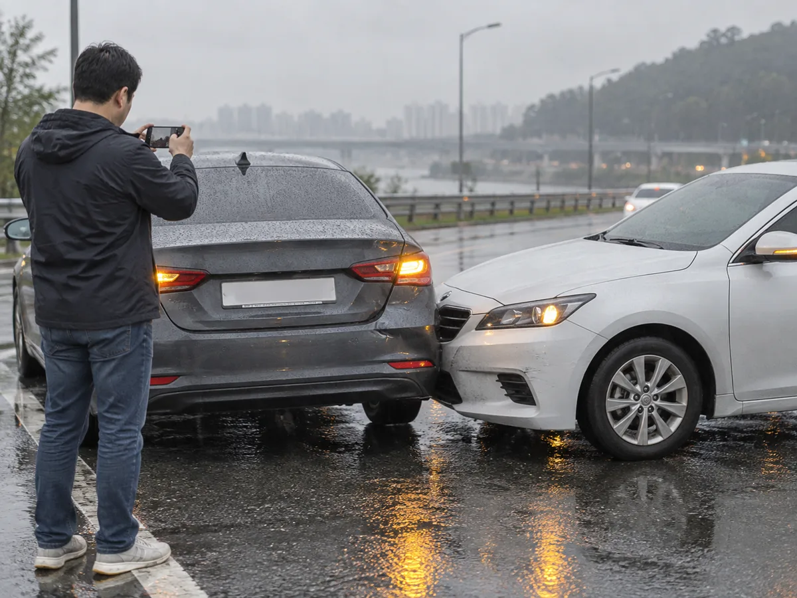
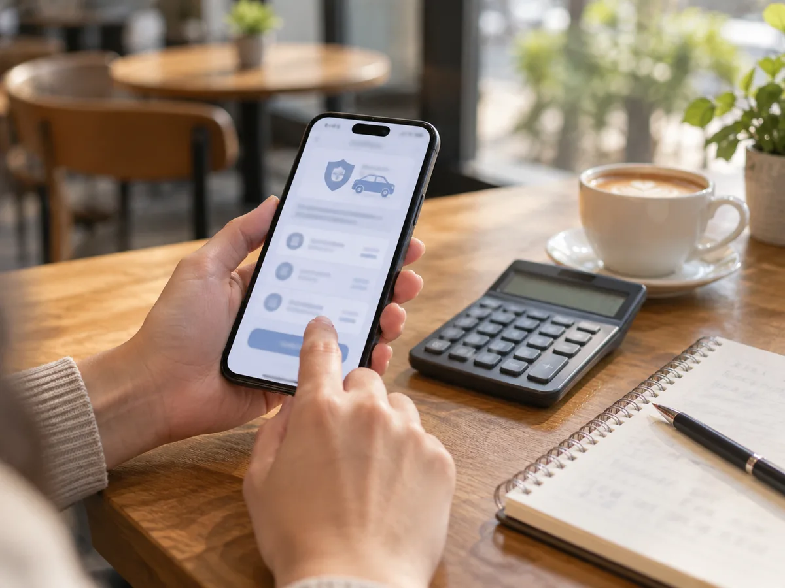

▲ 운전자보험은 자동차보험이 다루지 않는 형사·행정상 부담을 대비하는 상품이다 ⓒ CarPrism (AI 생성 이미지)
"자동차보험 있는데 운전자보험까지?" 보험 상담에서 가장 흔하게 나오는 질문이다. 답은 '무엇을 보장받고 싶은가'에 달려 있다. 자동차보험은 피해자와 내 차의 손해를 메워 주지만, 사고 뒤 운전자가 짊어지는 형사합의금·벌금·변호사 비용은 기본 구조상 보장 대상이 아니다. 운전자보험은 바로 이 빈틈을 채우는 상품이다. 다만 2026년 1월 이후 신규 계약부터 변호사선임비용 담보에 자기부담금이 붙는 등 보장 구조가 바뀌었기 때문에, 예전 상담 자료만 믿고 가입하면 기대와 다를 수 있다.
1. 자동차보험과 운전자보험, 무엇이 다른가
자동차보험은 법적으로 가입이 강제되는 대인배상Ⅰ·대물배상 등 의무보험을 중심으로, 사고 상대방에게 줄 손해배상금과 내 차·내 몸의 손해를 다룬다. 반면 운전자보험은 사고를 낸 운전자 본인이 지는 형사·행정상 부담을 대비하는 상품이다. 보험사들은 공통적으로 "자동차보험은 상대방을 위한 보험, 운전자보험은 사고를 낸 나를 위한 보험"이라는 식으로 설명한다.
▲ 보험 가입 전에는 자동차보험이 이미 무엇을 보장하는지부터 확인하는 것이 순서다 ⓒ CarPrism (AI 생성 이미지)
| 구분 | 자동차보험 | 운전자보험 |
|---|---|---|
| 가입 성격 | 대인Ⅰ·대물 등 의무 가입 | 임의 가입(선택) |
| 보장 대상 | 피해자 손해배상, 내 차 수리, 내 신체 손해 등 | 운전자의 형사합의금·벌금·변호사 비용 등 |
| 형사합의금 | 보장 대상 아님(민사 손해배상과 별개) | 교통사고처리지원금 특약으로 보장 |
| 벌금 | 보장 대상 아님 | 운전자벌금 담보로 보장(한도 내) |
| 변호사 선임 비용 | 보장 대상 아님 | 변호사선임비용 특약으로 보장(한도·자기부담 확인) |
| 가입 단위 | 차량 단위 | 운전자 단위(상품별로 다름) |
📍 '합의 필요'와 '내 돈 든다'는 다르다
자동차보험 대인배상으로 피해자 치료비·위자료 등 민사 손해는 처리된다. 그런데도 형사합의금이 따로 논의되는 이유는 피해자와의 합의 여부가 형사 처벌 수위에 영향을 줄 수 있기 때문이다. 민사 합의 수준과 산정 방식은 보험사가 내민 합의금, 그대로 서명해도 될까에서 별도로 다뤘다.
2. 핵심 3대 담보: 교통사고처리지원금·벌금·변호사선임비용
보험저널(2025년 11월 11일)이 대형 손해보험사 8곳의 운전자보험 핵심 담보를 비교한 기사에 따르면, 교통사고처리지원금은 경미한 사고(진단 3주 이하) 300만~500만원대에서 사망 시 최대 2억원까지 상품별로 차등 설계돼 있다. 같은 기사에서 변호사선임비용 한도는 삼성화재·현대해상·DB손보·KB손보·메리츠·한화손보·흥국화재가 최대 3,500만원, NH농협손보가 2,500만원으로 소개됐다. 이 숫자는 당시 판매 상품의 예시이며 지금 판매 중인 상품과 다를 수 있다.
| 담보 | 무엇을 보장하나 | 한도 예시 |
|---|---|---|
| 교통사고처리지원금 | 사망·중상해·12대 중과실 사고에서 형사합의를 위해 피해자에게 지급한 합의금 | 피해 정도별 300만~500만원대부터 사망 최대 2억원(선지급 한도는 별도, 2025년 11월 보도에서 다수 손보사 1.4억원·NH농협손보 1억원으로 소개됨). 상품 안내에는 최대 2억원(선지급 가능) 또는 선지급 2.5억원 등 표기가 갈림 |
| 운전자벌금 | 형사재판에서 확정된 벌금(대인·대물·스쿨존 등 구분) | 한 대형 손보사 다이렉트 상품 안내(2026년 7월 기준 페이지) 예시로 대인 2,000만원·대물 500만원·스쿨존 사고 3,000만원. 다른 상품 안내에는 최대 3,000만원으로 표기된 경우도 있음 |
| 변호사선임비용 | 형사사건 대응을 위해 변호사를 선임할 때 든 비용 | 2025년 11월 기준 최대 3,500만원(NH농협손보 2,500만원)으로 소개됨 — 2026년 신규 계약은 심급별 한도·자기부담 구조로 변경(4장 참고) |
위 표의 한도는 가입금액 상한 예시일 뿐, 실제 지급은 약관의 지급 조건에 따른다. 특히 벌금은 법원이 정한 금액만큼만, 형사합의금은 실제로 합의해 지급한 금액 범위에서만 지급되는 실손 성격이 강하다. 어떤 담보가 '정액'이고 어떤 담보가 '실손'인지는 상품설명서에서 구분해서 확인해야 한다.
3. 왜 형사합의금이 필요한가 — 12대 중과실과 민식이법
교통사고처리 특례법은 종합보험(공제)에 가입돼 있더라도 일정한 중대 사고에서는 공소 제기가 제한되지 않는다고 정한다. 12대 중과실은 대표적으로 다음 유형이다.

▲ 사고 직후 상황을 기록해 두면 이후 형사·민사 절차에서 사실관계를 설명하는 데 도움이 된다 ⓒ CarPrism (AI 생성 이미지)
| 번호 | 유형 |
|---|---|
| 1 | 신호·지시 위반 |
| 2 | 중앙선 침범, 고속도로 등에서의 횡단·유턴·후진 |
| 3 | 제한속도 시속 20km 초과 과속 |
| 4 | 앞지르기 방법·금지 위반 |
| 5 | 철길건널목 통과방법 위반 |
| 6 | 횡단보도 보행자 보호의무 위반 |
| 7 | 무면허 운전 |
| 8 | 음주·약물 운전 |
| 9 | 보도 침범, 보도 횡단방법 위반 |
| 10 | 승객 추락 방지의무 위반 |
| 11 | 어린이보호구역 내 안전운전의무 위반(13세 미만 어린이 사고) |
| 12 | 화물 고정조치 등 위반으로 인한 사고 |
이 목록은 통상적으로 안내되는 요지이며, 법령상 예외 사유에는 사고 후 도주·음주측정 불응 등도 별도로 규정돼 있다(중앙선 침범과 화물 고정조치 위반이 예외 사유에 포함된다는 점은 법령 검색 결과로 확인했다). 호별 원문은 교통사고처리 특례법 바로가기에서 확인 가능하다. 이 가운데 음주·약물, 무면허, 도주 사고는 운전자보험 약관에서 보장 대상에서 빠지는 경우가 일반적이다. 삼성화재 다이렉트가 2026년 안내에서 밝힌 것처럼, 보장이 적용되는 것은 사망사고, 신호위반·중앙선 침범 등 12대 중과실, 중상해 사고 같은 형사 책임이 생기는 교통사고이며 도주·음주·무면허 운전은 제외된다. 또 12대 중과실 사고는 피해자 진단이 6주 미만이어도 형사 처벌이 진행될 수 있어 6주 미만 사고를 따로 보장하는 특약이 있는지가 중요하다.
📍 민식이법은 벌금·합의금 한도를 따로 본다
특정범죄 가중처벌 등에 관한 법률 제5조의13은 어린이보호구역에서 안전운전의무를 위반해 13세 미만 어린이를 사망에 이르게 하면 무기 또는 3년 이상의 징역, 상해에 이르게 하면 1년 이상 15년 이하의 징역 또는 500만원 이상 3,000만원 이하의 벌금에 처하도록 한다(2020년 3월 25일 시행). 그래서 일부 운전자보험은 스쿨존 사고 전용 벌금·합의금 한도를 따로 둔다. 조문 원문은 국가법령정보센터 바로가기에서 확인 가능하고, 스쿨존 과태료 체계는 스쿨존 과태료, 얼마나 나올까에 정리돼 있다.
▲ 형사합의서는 합의 시점과 금액을 증빙하는 핵심 서류이므로 작성 전에 보험사 지급 조건을 확인해 둔다 ⓒ CarPrism (AI 생성 이미지)
4. 2026년 달라진 점 — 변호사선임비용 자기부담 50%
가장 큰 변화는 변호사선임비용 특약이다. 뉴스1(2025년 12월 1일 보도)은 금융감독원이 손해보험사들에 변호사 선임비용 담보의 기초서류(약관·요율서 등)를 바꾸도록 권고했고, 핵심이 가입자 자기부담률 50% 반영이라고 전했다. 금융감독원 보도자료 원문은 열람하지 못했고, 위 권고 내용은 복수 매체 보도를 교차한 것이다. 보험매일(2025년 12월 17일)도 이 개편이 2026년 1월부터 신규 가입자에게 적용되며, 예컨대 변호사 비용 1,000만원이 발생하면 종전에는 전액이 보장되던 것이 개편 후에는 500만원만 보장되는 구조라고 설명했다. 삼성화재 다이렉트 안내에서도 자기부담금 신설, 1·2·3심 심급별 한도 분리, 일부 상품의 경찰조사 단계 보장 확대가 함께 소개됐다. 시행 시점은 보도마다 표현이 갈려, 다수 매체는 2026년 1월 신규 계약부터로, 일부 매체는 대형사 1월 초·중소형사 1월 중순 적용 계획 또는 12월 중순 이후 개정 상품 출시로 전했다. 시행 시점은 가입하려는 보험사에 직접 확인해야 한다.
▲ 변호사 선임 비용은 형사절차 단계별로 발생하므로 어느 단계부터 보장하는지 약관에서 확인해야 한다 ⓒ CarPrism (AI 생성 이미지)
| 항목 | 개편 전(예시) | 2026년 1월 이후 신규 계약(보도) |
|---|---|---|
| 자기부담 | 없음(실제 비용 한도 내 전액) | 50% 자기부담 반영 권고 |
| 한도 구조 | 1~3심 통합 한도(최대 3,500만~5,000만원 등 상품별) | 1심·2심·3심 심급별 한도 분리. 한 대형 손보사 다이렉트 상품 안내(2026년 7월 기준)에는 심급당 500만원(50% 자기부담), 선지급은 한도의 70%까지로 표기돼 있고, 1심 변호사비가 500만원이면 가입자 250만원·보험사 250만원이라는 보도 예시가 있음. 상품별로 다름 |
| 기존 가입자 | 가입 당시 약관 유지 | 기존 계약은 그대로, 재가입·신규 시 개정 약관 적용 |
| 보험료 동향 | - | 삼성화재 최저보험료 1만원에서 3만원으로(2025년 12월 15일부터), 메리츠화재·롯데손보 5,000원에서 1만원으로 인상된 것으로 보도됨 |
이 개편의 배경으로는 삼성화재·DB손해보험·현대해상·메리츠화재·KB손해보험 등 대형 손해보험사 5곳의 변호사 선임비용 특약 지급보험금이 2021년 146억원에서 작년(2024년) 613억원으로 4배 이상 늘었다는 보도가 나온다. 이 수치는 김남근 더불어민주당 의원실이 공개한 자료를 인용한 것으로 금융감독원이나 보험사가 공표한 원자료는 직접 확인하지 못했다. 업계에서는 개편 전 가입을 권하는 '절판 마케팅'도 나타났다고 전해졌는데, 이미 개편이 지난 지금 시점에서는 압박 마케팅보다 현재 판매 약관 기준의 실제 보장을 따져 보는 편이 합리적이다.
5. 특약 구성과 월 보험료 수준
운전자보험은 기본 담보(교통사고처리지원금·벌금·변호사선임비용) 위에 상해·부상치료 특약 등을 얹는 방식으로 설계된다. 삼성화재 다이렉트 안내에는 부상치료지원금 특약이 부상등급(1~14급)에 따라 정액 지급된다는 설명도 있다. 어떤 특약을 붙이느냐에 따라 보험료가 크게 달라지므로 필수 담보와 선택 담보를 나눠 생각하면 된다.
| 구분 | 담보 예시 | 가입 시 생각할 점 |
|---|---|---|
| 핵심(대부분 포함) | 교통사고처리지원금(중대법규위반 포함), 운전자벌금, 변호사선임비용 | 진단 기간별 한도, 어린이보호구역 별도 한도, 제외 사고 확인 |
| 보완 | 6주 미만 중대법규위반 지원금, 부상치료지원금 | 중과실 경상 사고 대비 여부, 정액 여부 |
| 선택 | 가족 운전 확대, 렌트카 사용 시 보장 등 상품별 특약 | 실제 운전 패턴과 겹치는지 |
📍 월 보험료는 '예시'로만 참고
일부 정보성 매체는 2026년 6월 기준 40세 남성 운전자보험 11개 상품을 비교한 평균 보험료를 월 1만 79원 수준으로 소개하고, 다이렉트 상품 평균을 월 1만원 안팎이라고 전한다(원출처는 확인하지 못했다). 다만 이는 협회나 금융당국이 공시한 평균이 아니라 매체별 시뮬레이션이며, 연령·성별·직업·채널·갱신 여부·특약에 따라 크게 달라진다. 보험다모아 운전자보험 비교 화면은 '40세 남성·상해 1급·자가용운전자·월납·표준 가입조건'을 기본값으로 보험료 예시를 보여 주되 실제 보험료와 다를 수 있다고 안내한다. 특정 보험사 상품의 우열은 이 기사에서 비교하지 않는다. 실제 보험료는 견적을 직접 받아 확인해야 한다.

▲ 보험료는 연령·특약·채널에 따라 달라지므로 견적을 여러 조건으로 직접 받아 보는 것이 정확하다 ⓒ CarPrism (AI 생성 이미지)
같은 담보라도 갱신형인지 비갱신형인지, 순수보장형인지 환급형인지에 따라 총납입액이 달라진다. 보험료 인상 추세가 보도된 만큼 만기·갱신 시점의 보험료 상승 조건을 청약 전에 확인해 두자.
6. 가입 전 확인할 것 — 중복 가입과 기존 보장
▲ 가입 전 기존 보험 보장과 갱신 조건을 체크리스트로 정리해 두면 중복과 누락을 줄일 수 있다 ⓒ CarPrism (AI 생성 이미지)
운전자보험이 필요한지 판단하려면 먼저 이미 가진 보장을 조회해야 한다. 신용정보원의 내보험다보여에서 본인 명의로 가입한 보험을 확인할 수 있고 내보험다보여 바로가기로 이동할 수 있다. 보험다모아는 생명보험협회와 손해보험협회가 공동 운영하며 보험사가 신고한 공시자료를 바탕으로 광고 없이 정보를 제공하는 사이트로, 운전자보험도 손해보험사·생명보험사 상품별로 비교할 수 있다. 보험다모아 바로가기에서 확인 가능하며, 화면의 표준 가입조건은 실제 청약 조건과 다를 수 있다. 금융감독원 파인 바로가기에서는 금융소비자 유의사항을 볼 수 있다.
✅ 가입 전 체크리스트
· 기존 상해·종합보험, 회사 단체보험, 카드 부가서비스에 교통사고처리지원금·변호사비 특약이 이미 있는지 조회
· 실손 성격 담보는 중복 가입해도 비례 분담되어 보험료만 이중으로 나갈 수 있음(정액 담보는 약관 확인)
· 교통사고처리지원금이 6주 미만 중과실 사고를 포함하는지, 어린이보호구역 한도가 따로 있는지
· 변호사선임비용의 자기부담률·심급별 한도·보장 시작 단계(경찰조사 포함 여부)
· 음주·무면허·도주 등 면책 사유와 형사절차 종결 전 합의 요건
· 갱신형이면 갱신 시 보험료 상승폭, 최저보험료 조건
사고 위험 자체가 낮은 운전자, 예컨대 주행거리가 짧고 스쿨존·이면도로를 거의 지나지 않는 사람이라면 필수라고 보기 어렵다. 반대로 출퇴근이나 영업으로 운전이 잦거나 어린이보호구역을 자주 지난다면 형사합의 부담에 대비하는 편이 낫다. 다만 교통사고가 합의나 벌금 단계에서 마무리되는 경우가 많다는 점, 자신의 운전 경험과 기존 보장을 함께 따져 결정해야 한다는 점은 보험 매체들이 공통으로 언급하는 내용이다.
7. 사고가 났다면 — 보험금 청구 절차
▲ 청구 서류는 촬영본으로 접수하는 보험사가 많지만 원본 제출을 요구하는 경우도 있어 접수 방식을 먼저 확인한다 ⓒ CarPrism (AI 생성 이미지)
| 단계 | 할 일 | 유의점 |
|---|---|---|
| 1. 사고 접수 | 자동차보험 사고 접수와 별개로 운전자보험사에도 사고 사실을 알림 | 운전자보험이 다른 보험사이면 각각 접수 |
| 2. 수사 대응 | 경찰 조사, 필요 시 변호사 선임 | 변호사 선임 전 지급 조건·선지급 여부 확인 |
| 3. 형사합의 | 피해자와 합의서 작성, 합의금 지급 | 형사절차 종결 전 합의여야 지급 대상이 되는 경우가 많음. 합의 전 보험사에 알리는 것이 안전 |
| 4. 서류 준비 | 합의서, 송금·영수 증빙, 진단서(진단 주수 확인), 사건 관련 확인 자료, 변호사 계약서·영수증 등 | 필요 서류는 약관·보험사별로 다르므로 접수 시 안내받기 |
| 5. 청구·지급 | 보험사 심사 후 지급 | 선지급형 담보는 판결 확정 시 정산 여부 확인 |
가장 자주 벌어지는 분쟁은 지급 시기와 조건이다. 보험저널이 전한 업계 관계자의 말처럼 보장 한도보다 어떤 조건에서 언제 지급되느냐가 더 중요하다. 형사절차가 끝난 뒤에 합의한 금액은 보상에서 제외되는 경우가 많다는 점이 대표적이다. 분쟁이 생기면 보험사 민원과 별개로 금융감독원 분쟁조정 절차를 알아볼 수 있다.
8. 운전 패턴별로 따져 보는 필요성
가입 여부에는 정답이 없고, 사고 시 형사 책임에 노출될 가능성과 기존 보장을 함께 봐야 한다. 아래 표는 이 기사에서 확인한 사실(12대 중과실, 어린이보호구역 가중, 변호사비 자기부담 신설)을 운전 패턴에 대입한 판단 보조표이며 상품 추천이 아니다.
| 운전 패턴 | 노출되는 위험 | 특히 확인할 담보·조건 |
|---|---|---|
| 출퇴근·영업으로 매일 장거리 운전 | 신호·중앙선·과속 등 중과실 사고 가능성 누적 | 교통사고처리지원금 한도, 6주 미만 중과실 특약, 갱신 시 보험료 |
| 스쿨존·이면도로 통행이 잦음 | 어린이보호구역 사고 시 민식이법 적용 가능 | 스쿨존 전용 벌금·합의금 한도, 6주 미만 사고 지원 여부 |
| 가끔 운전(주행거리 짧음) | 노출 빈도는 낮지만 사고 시 형사 부담은 동일 | 기존 상해·종합보험의 관련 특약 유무, 최소 가입 여부 |
| 이미 운전자보험 가입 | 2026년 이전 약관은 유지되나 갱신 시 개정 약관 적용 | 변호사선임비용 자기부담·심급별 한도, 갱신 조건 |
| 가족 차량을 번갈아 운전 | 운전자 단위 보장 범위 차이 | 보장 대상 운전자 범위, 렌트·타인 차량 운전 시 보장 |
9. 요약
운전자보험은 자동차보험이 다루지 않는 형사합의금·벌금·변호사 비용을 대비하는 임의 보험이다. 12대 중과실, 사망·중상해, 어린이보호구역 사고처럼 형사 책임이 생기는 사고에 대비하는 성격이라 운전 빈도와 스쿨존 통행 여부에 따라 필요성이 갈린다.
2026년 1월 이후 신규 계약은 변호사선임비용에 자기부담 50%가 반영되는 구조로 바뀌었다고 보도됐고, 기존 가입자는 가입 당시 약관이 유지된다. 한도·보험료는 모두 상품별로 다르므로 이 기사의 숫자는 예시로만 보고, 청약 전 상품설명서로 확인해야 한다.
가입 전에는 내보험다보여로 기존 보장을 조회하고, 실손 담보 중복과 면책 사유·지급 조건을 확인하자. 사고가 나면 형사절차 종결 전 합의, 보험사 사전 통지, 증빙 서류 보관이 청구의 핵심이다.